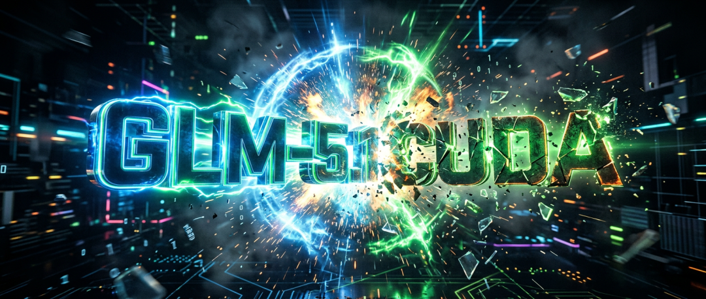
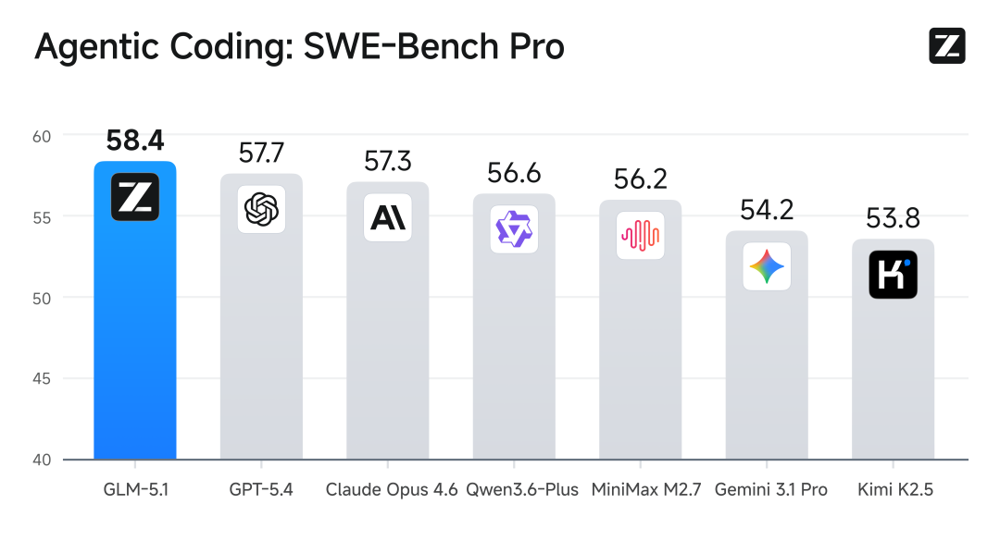
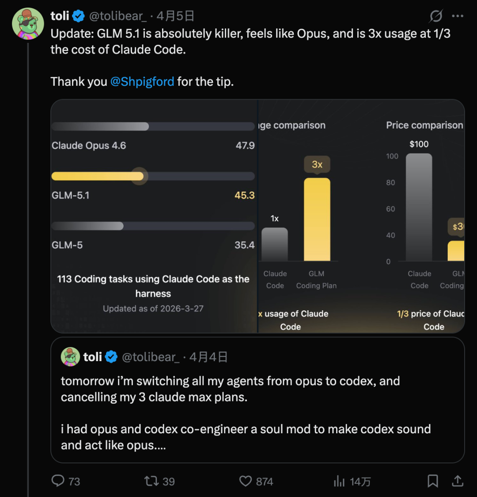
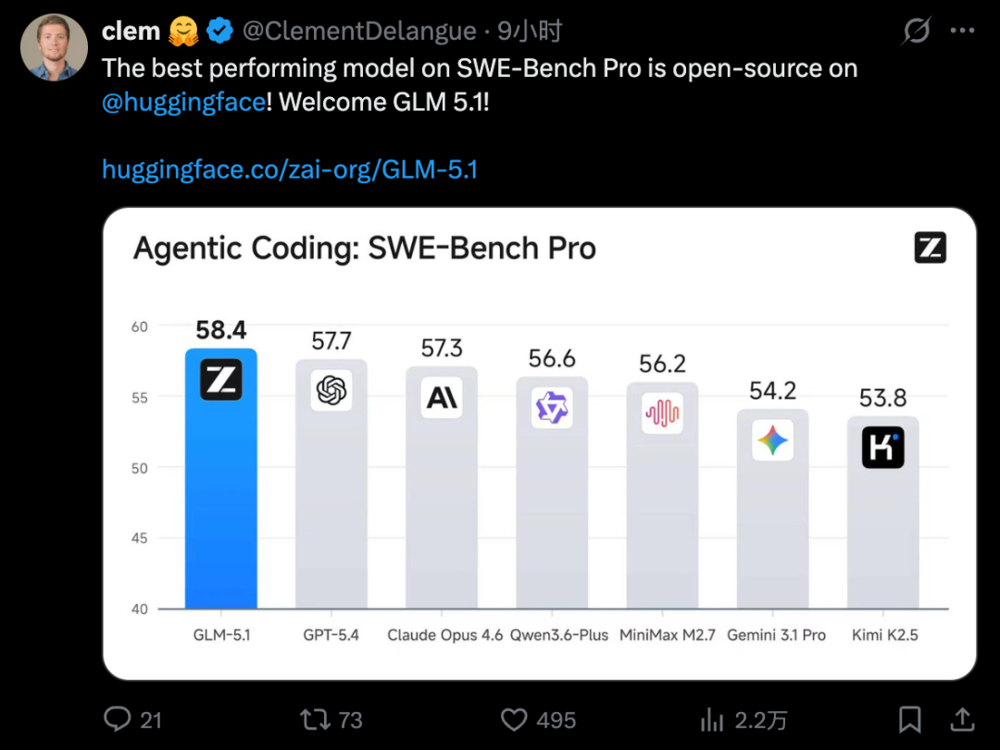
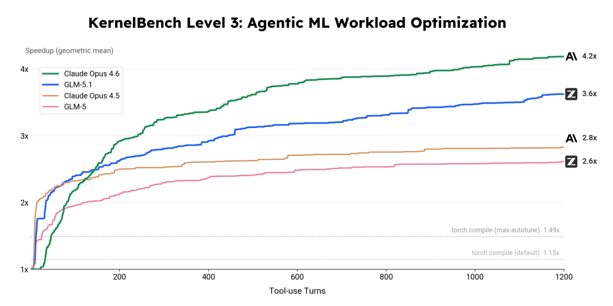
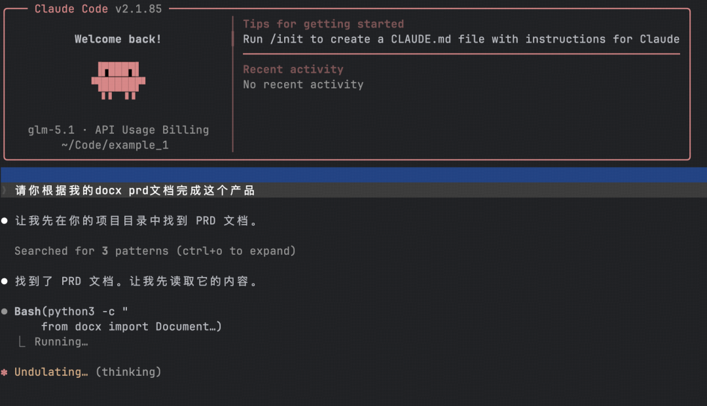
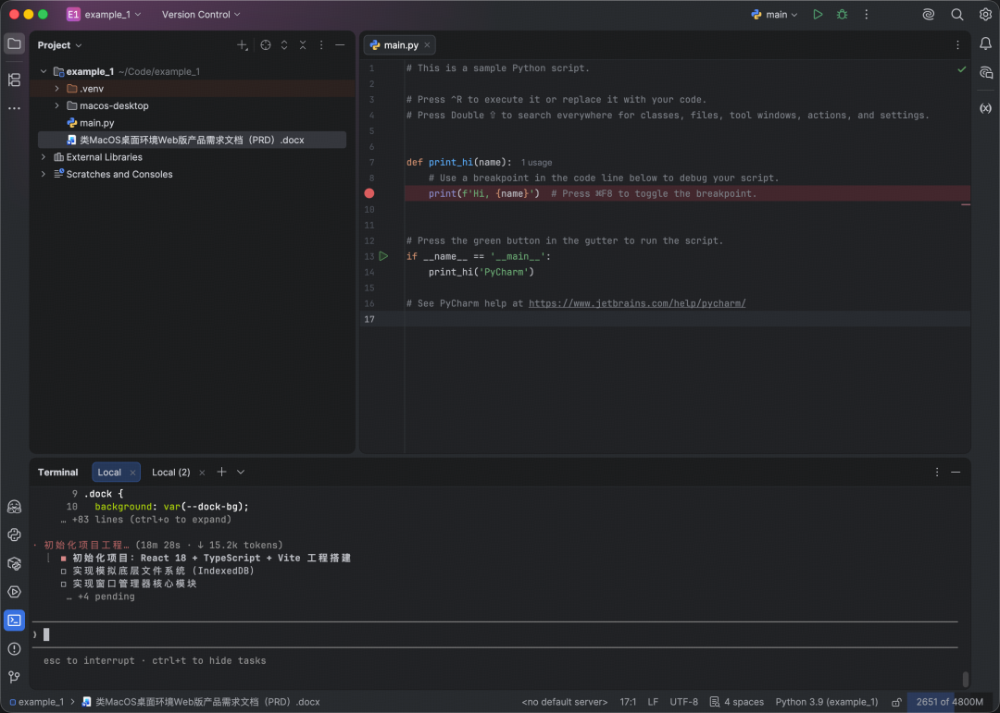
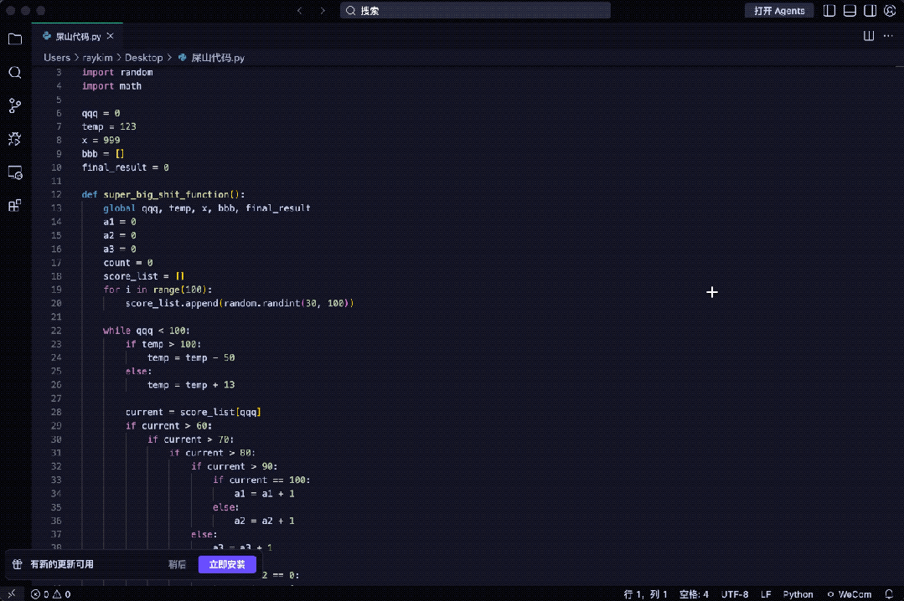
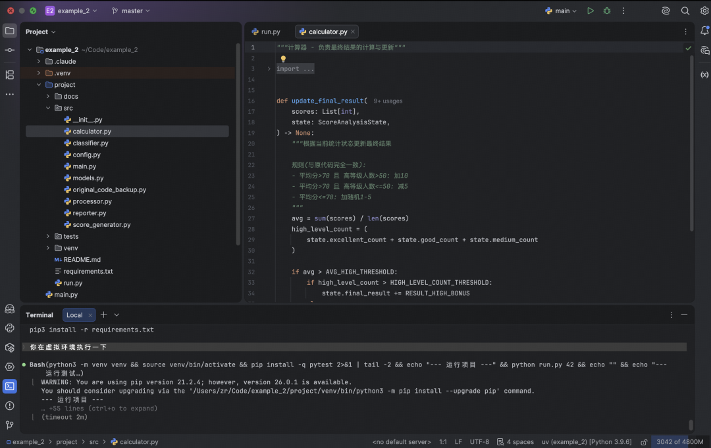

金磊 发自 凹非寺
量子位 | 公众号 QbitAI
优化CUDA Kernel这件事，刚刚被AI狠狠地冲击了一波。
因为现在，给AI十四个小时，它就能帮你把CUDA Kernel优化，加速比从2.6×推至35.7×！
什么概念？
以前人类资深CUDA工程师要完成这个任务，需要数月反复测试、调优、推翻重来才行；但现在，AI在你睡觉的时候就能解决掉。
而且AI在这个过程中还展现出了专家级的直觉。
例如在优化初期，它尝试在现有高层框架内寻找解法，但很快通过自主跑测试发现性能触及了天花板，然后它便做出了人类专家才有的决策——
自主判断放弃高层框架，直接转向底层C++进行硬核重写。
整整14个小时里，这个AI主打一个全自动：AI自己发现瓶颈，自己改变技术栈，自己重新编译，自己测试。
那这到底是何许AI是也？
不卖关子，正是大家熟悉的，来自智谱的开源模型——GLM-5.1。

随着这次长程任务（Long Horizon Task）能力的提升，智谱官方也宣布了一个重要的突破：
首次解锁了开源模型与当前全球最顶尖闭源模型Claude Opus 4.6的全面对齐！
嗯，是妥妥稳坐全球最强开源模型宝座的感觉了。
而且，从更多的权威评测榜单中来看，也是印证了这一点。
在被称为“软件工程能力试金石”的SWE-bench Pro基准测试中，GLM-5.1刷新了全球最佳成绩，直接超越Claude Opus 4.6、GPT-5.4等一众头部模型，拿下全球第一：

甚至在海外网友们的圈子中，已经吹起了弃用Claude Max的风了：
它的手感和Opus一模一样，使用额度是Claude Code的3倍，成本却只有1/3。

HuggingFace CEO也出面站台，称SWE-Bench Pro中性能最强的模型开源了：

而这一切成绩的背后，正是智谱面向小时级的长程任务能力。
给AI几个小时，一切都不一样了
当前主流的大模型，可以说大多数还是处于“分钟级交互”的阶段。
但到了GLM-5.1这边，它的交付单位就不同了——一个完整的项目。
接下来，我们就通过实测的方式，来看下GLM-5.1的实力到底几何。
调用工具1000轮，优化真实机器学习模型负载
第一个实测，我们顺着前面的CUDA的例子，继续让GLM-5.1进行一场考验：
KernelBench Level 3优化基准，这一基准涵盖50个真实机器学习计算负载，主打一个还原真实工业场景，考验的是端到端的完整优化能力而非单一算子调试。
在超过24小时的不间断迭代中，GLM-5.1全程自主发力，无需人类专家干预，一遍遍完成“编译—测试—分析—重写”的闭环循环，最终交出了这样的结果——
3.6倍几何平均加速比，而作为对比，torch.compile max-autotune模式仅能达到1.49倍，差距直接翻倍不止！

从这个过程中可以看到，GLM-5.1能够自主编写定制Triton Kernel和CUDA Kernel，运用cuBLASLt epilogue融合并实施shared memory tiling与CUDA Graph优化。
这些优化策略覆盖了从高层算子融合到微架构级调优的完整技术栈，每一步都是模型的自主决策。
结果再次表明，在GPU内核优化这一传统上高度依赖专家经验的领域，AI模型已经展现出从问题分析、方案设计到迭代调优的端到端自主工作能力。
1小时从零构建MacOS桌面环境
在这个实测中，我们给GLM-5.1扔了一份3000字的PRD，核心要求只有一个：
从0开始复刻MacOS核心UI与交互，不仅要前端壳子，还必须包含窗口管理器、Dock栏调度、以及模拟的底层文件系统。

这是一个标准的前端工程团队至少需要数天才能打磨出原型的任务，但在GLM-5.1这里，时间被压缩到了小时级别。
瞧，待它分析完任务之后，自己就开始唰唰地编程了：

1个小时之后，在没有任何人工参与的情况下，一个MacOS的桌面环境，就这么水灵灵地诞生了！
可以看到，更改桌面背景、放大缩小Docker、终端命令执行、系统自带的截图功能等，统统都能实现。
而在智谱官方的demo中，展示了GLM-5.1耗时8小时实现的更加复杂的Linux系统：
执行了1200多步，完整的桌面、窗口管理器、状态栏、应用程序、VPN管理器、中文字体支持、游戏库等……相当于一个4人团队一周的开发工作量。
不得不说，现在GLM-5.1的每一次提交，都是具有实质意义的系统级演进。
全自动重写屎山代码
写代码的人都知道，比从零写一个新项目更痛苦的，是重构别人留下的屎山代码。
但现在有了GLM-5.1，我们可以把这个任务交给它来处理了。
例如这段代码就堪称是屎山中的经典：变量名完全无意义、五层嵌套if、重复计算总和三遍、全局变量到处乱改、函数几百行不拆分……

能运行吗？能运行；恶心吗？也是真恶心。
而在GLM-5.1只需半小时的自动重写之后，一份注释清晰、符合标准的代码就诞生了：

655次迭代，打破向量数据库性能瓶颈
如果说重构代码还只是把已有的东西做好，那向量数据库优化，考验的就是AI自主迭代、持续突破的能力。
这也或许正是人类资深工程师最核心的价值。
在这项测试中，GLM-5.1的需求是优化现有向量数据库的查询性能，尽可能提升QPS。
随后，它开启了完全自主的“测试-分析-优化-再测试”闭环。
每一轮优化后，它都会主动跑完整的Benchmark，获取QPS、延迟、内存占用等核心数据，自主分析性能瓶颈。
最终，在655轮迭代之后，GLM-5.1把向量数据库的查询吞吐从初次交付的3108 QPS一路推到21472 QPS，提升到初始正式版本的6.9倍。
AI能独立工作多久，成了新标准
之所以GLM-5.1这次能够炸场，本质上是它踩中了AI行业的下一个核心赛点：长程任务（Long Horizon Task）能力。
2025年3月，全球顶尖的AI安全研究机构METR（Model Evaluation and Threat Research）便提出了一个彻底改变行业认知的新指标，叫做Task-Completion Time Horizon（任务完成时间线）。
这个指标的核心思想是，不再用做题的准确率来衡量模型有多聪明，而是用时间来衡量它能独立完成多长时间的人类专家任务。
研究显示，前沿模型的时间线每7个月就会翻一倍，这条指数曲线，被MIT Technology Review称为“AI领域最重要的一张图”。红杉资本更是在2026年初直接宣告：“这就是AGI的核心方向”，并直言：2023-2024年的AI，是只会对话的“talker”，而2026-2027年的AI，将成为能真正落地做事的“doer”。
而GLM-5.1，是全球第一个在真实工程任务中，验证了8小时持续工作能力的开源模型。
它能在单次任务中，持续、自主地工作长达8小时，过程中自主规划、自主执行、自主测试，碰壁时主动切换策略，出错后自行修复，最终交付完整的工程级成果。
GLM-5.1之所以能做到这一点，核心源于三个维度的系统性技术突破：
第一，更强的长程规划与目标保持能力。
它能把一个复杂的大目标，拆解为可执行的多阶段计划，并且在长达十几小时、上千步的执行链路中，始终围绕最终交付目标推进。简单来说，就是干到第十步，还记得第二步定的规矩。
第二，更稳的自适应纠错与持续执行能力。
它实现了代码编写、工具调用、环境调试、API对接等多个环节的稳定衔接，中途出错时，不会停下来等人工介入，而是会自主查看错误日志、定位问题根源、修复bug，甚至自己写回归测试用例验证修复效果。
第三，更好的状态延续与上下文整合能力。
面对长时间跨度、多轮反馈和百万级token的上下文信息，它能稳定追踪已完成的工作、当前所处的阶段和下一步的核心动作，持续整合新的信息，保持整个执行链路的一致性。
开源模型看中国，更得看智谱
GLM-5.1的出现，不仅是模型能力的升级，更改写了全球大模型行业的叙事逻辑。
长久以来，中国开源模型始终带着追赶者的标签，与美国顶尖闭源模型存在差距，而GLM-5.1彻底打破这一局面：
它在权威榜单上对齐Claude Opus 4.6，在SWE-bench Pro等核心工程指标上实现反超，让中国开源AI在核心工程能力上与全球前沿并驾齐驱。
更重要的是，它的变革远超模型本身，正重构万亿级IT服务市场的底层逻辑。
AI Coding的进化有清晰路径：从程序员提效工具，到降低代码门槛，再到能自主做事的初级工程师，而GLM-5.1的Long Horizon能力，直接将AI推向能持续工作数小时、交付完整项目的新阶段。
当AI的交付单位从一行代码变为一个完整项目，便冲击了整个软件工程的生产关系——4人团队一周的工作量、资深工程师数月的优化任务，它数小时就能完成，这将重构多个行业的定价与人力配置逻辑。
当然，我们不必陷入AI会替代程序员的无谓焦虑。就像当年计算机的普及，没有淘汰会计这个职业，只是淘汰了不会用计算机的会计；AI的到来，也不会淘汰开发者，只会淘汰不会驾驭AI的开发者。
GLM-5.1的出现，真正给整个行业抛出的核心问题是：当AI已经能自主完成长达数小时的复杂长程任务，实现从规划、执行、纠错到完整项目交付的全闭环时，人类的不可替代性到底在哪里？
答案或许就是定义问题、创造价值、做出核心决策的能力，毕竟这是AI暂时无法替代的核心护城河。
而对中国AI行业而言，GLM-5.1只是开始，当开源模型达到全球顶尖工程能力、AI从对话者变为执行者，行业必将迎来更彻底、更深刻的变革。
一键三连「点赞」「转发」「小心心」
欢迎在评论区留下你的想法！
— 完 —
🔹 谁会代表2026年的AI？
龙虾爆火，带动一波Agent与衍生产品浪潮。
但真正值得长期关注的AI公司和产品，或许不止于此。
如果你正在做，或见证着这些变化，欢迎申报。
让更多人看见你。👉 https://wj.qq.com/s2/25829730/09xz/